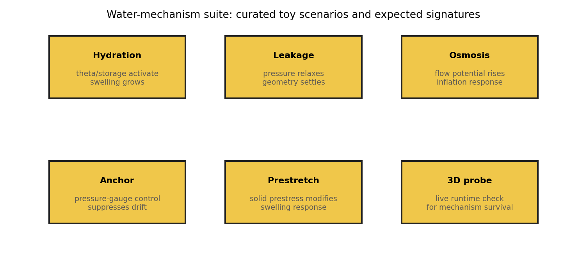
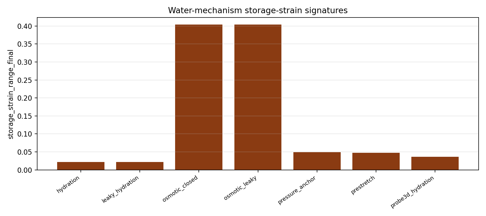
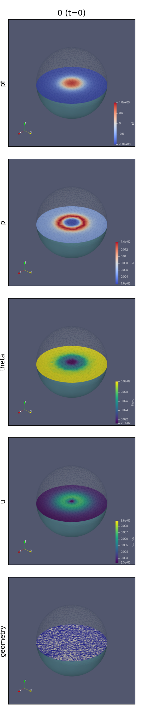
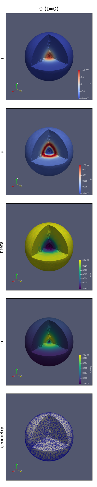
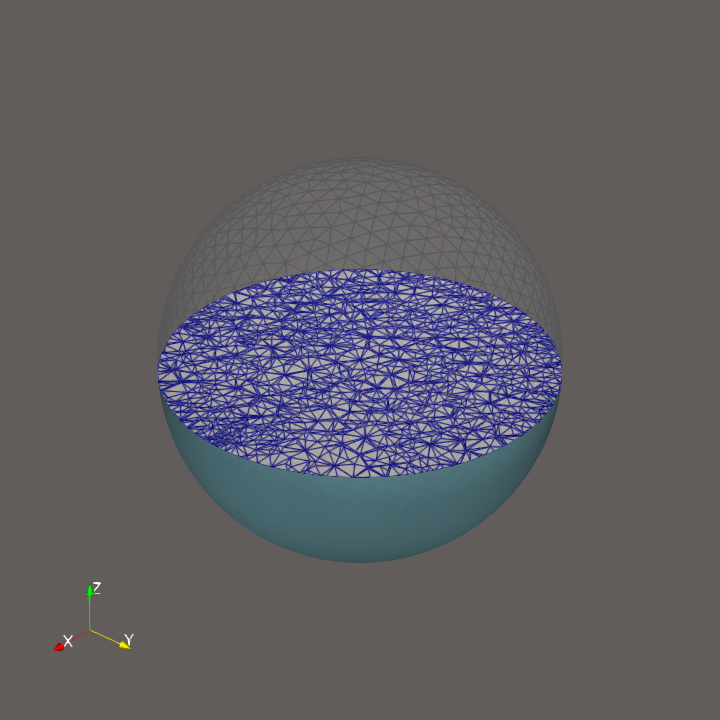
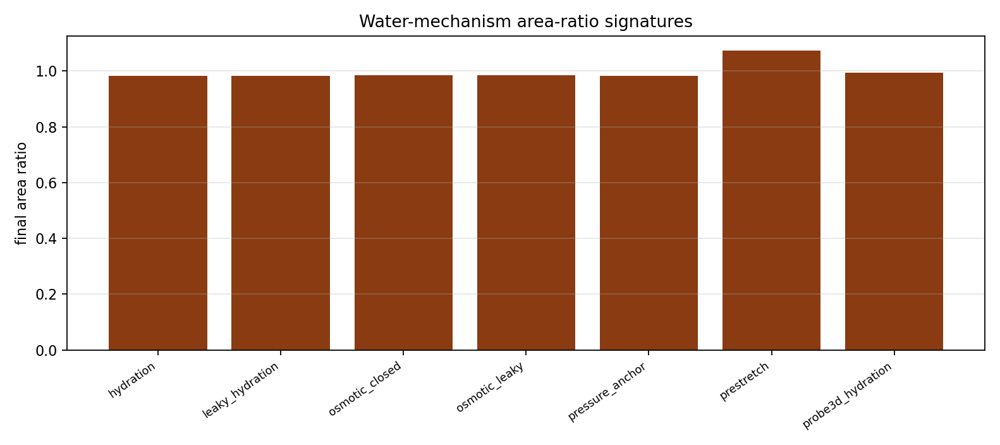
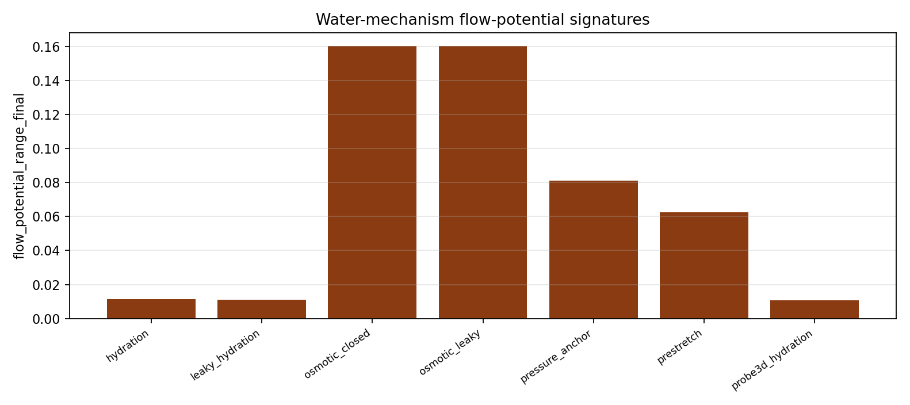
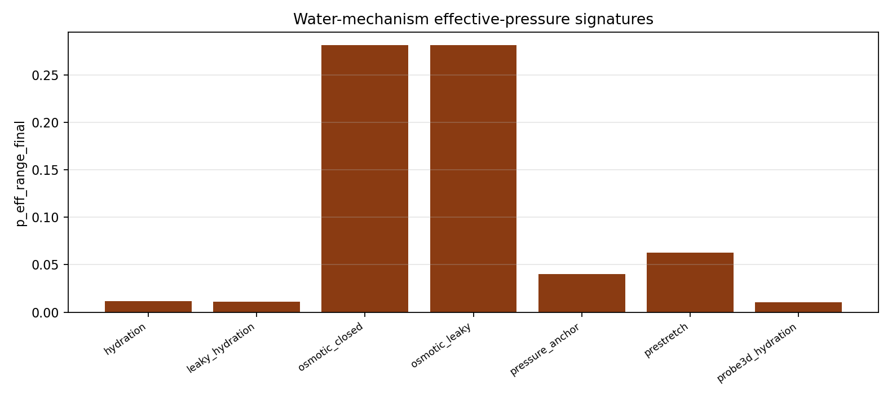

Benchmark
Water Mechanism Suite
Family: mechanism-validation
Mechanism-signature suite for hydration, leakage, osmotic, anchoring, prestretch, and 3D probe lanes.
Target and Success Criteria
target_kind: Mechanism signature
Tier: full
Unknowns active: water-mechanism summary observables
Frozen terms: curated fixed-mesh baselines plus one 3D probe rerun
Comparison grammar: Achieved / Target
Tickets: vv-013
What This Benchmark Verifies
This suite checks that each water mechanism produces the expected qualitative signature across area ratio, flow-potential range, effective-pressure range, and storage strain range.
Benchmark Narrative
Narrative
Physical Problem
This suite compares curated water scenarios and one live 3D probe to confirm that hydration, leakage, osmosis, pressure anchoring, and prestretch produce the intended qualitative signatures.
Narrative
Target Definition
The target is a mechanism signature, not an analytic curve: each scenario should exhibit the expected pattern across area ratio, displacement, storage strain, flow potential, and effective-pressure ranges.
Narrative
Why These Observables
The mechanism schematic explains why the scenario family exists, the 3D probe media give a raw runtime example, and the signature plots show which extracted observables are used to separate hydration, leakage, osmotic, pressure-anchored, and prestretch responses.
Narrative
How To Read The Error
A miss isolated to one scenario usually points to wiring or metadata drift; coordinated shifts across many scenarios suggest shared constitutive or reporting regressions. The live 3D probe should be read as runtime confirmation, not as the canonical fixed-mesh truth.
Narrative
Reference Qualification
Most scenarios are backed by committed fixed-mesh baselines, while the 3D hydration probe is rerun through the public init/run path to confirm the mechanism survives outside the 2D fixture surface.
Narrative
Limitations
These are qualitative mechanism checks, not analytic accuracy claims. Scenario signatures are the focus, and AMR remains out of scope.
scenario_count
count
pass
Setup Schematic
figure

Abstract schematic of the curated water-mechanism scenarios and the qualitative signatures they are expected to produce.
plots/setup-schematic.png
Raw Run Evidence
Extracted Observables
plot

Storage-strain activation across the curated water-mechanism suite.
plots/storage-strain-signatures.png
Representative Simulation Artifacts
Montage and Video Views
montage

3D hydration probe montage: toy_montage_3d_equator_slice_norm.png
probe3d_hydration/run/water3d_hydration_swelling_fixed2/toy_montage_3d_equator_slice_norm.png
montage

3D hydration probe montage: toy_montage_3d_iso_quarter_cut_transparent_norm.png
probe3d_hydration/run/water3d_hydration_swelling_fixed2/toy_montage_3d_iso_quarter_cut_transparent_norm.png
Representative Frames
frame

3D hydration probe representative frame: step_000000.png
probe3d_hydration/run/water3d_hydration_swelling_fixed2/frames_3d_equator_slice_norm/geometry/step_000000.png
Target Comparison
plot

Final area-ratio signatures across the curated water-mechanism suite.
plots/area-ratio-signatures.png
Error Summary
plot

Flow-potential ranges across the curated water-mechanism suite.
plots/flow-potential-signatures.png
plot

Effective-pressure ranges across the curated water-mechanism suite.
plots/effective-pressure-signatures.png
Scalar Summary
| Label | Value | Unit | Comparison | Threshold | Severity |
|---|---|---|---|---|---|
| scenario_count | 7 | count | >= 6 | 6 | pass |
Evidence Table
| Label | Metric | Comparison | Threshold | Severity |
|---|---|---|---|---|
| scenario_count | summaries | 7 | >= 6 | pass |
Series Overview
| Plot | Group | Observable | Case | Level | Target |
|---|---|---|---|---|---|
| hydration_area_ratio | mechanism_signature | Area ratio | hydration | scenario | mechanism signature |
| leaky_hydration_area_ratio | mechanism_signature | Area ratio | leaky_hydration | scenario | mechanism signature |
| osmotic_closed_area_ratio | mechanism_signature | Area ratio | osmotic_closed | scenario | mechanism signature |
| osmotic_leaky_area_ratio | mechanism_signature | Area ratio | osmotic_leaky | scenario | mechanism signature |
| pressure_anchor_area_ratio | mechanism_signature | Area ratio | pressure_anchor | scenario | mechanism signature |
| prestretch_area_ratio | mechanism_signature | Area ratio | prestretch | scenario | mechanism signature |
| probe3d_hydration_area_ratio | mechanism_signature | Area ratio | probe3d_hydration | scenario | mechanism signature |
Cases
Case
hydration
Hydration-Driven Swelling
Case
leaky_hydration
Leakage-Limited Relaxation
Case
osmotic_closed
Osmotic Inflation
Case
osmotic_leaky
Osmotic Drainage Response
Case
pressure_anchor
Pressure-Anchored Osmotic Response
Case
prestretch
Prestretch Swelling Verification
Case
probe3d_hydration
Hydration-Driven Swelling